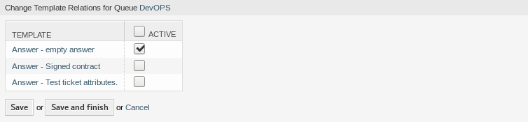

模板↔队列¶
共享、分发和更改标准文本模块和信息，以便与客户共享或在团队之间进行通信，这可能是一项不可能的任务。
OTRS可以快速帮助您确保所有团队都有正确的模板可供基于队列的分配使用。
使用此屏幕将一个或多个模板添加到一个或多个队列。 要使用此功能，需要至少将一个模板和一个队列添加到系统中。 管理屏幕位于 工单设置 组的 模板 ↔ 队列 模块中。

管理模板和队列的关联
管理模板 ↔ 队列关系¶
若要为一个队列分配一个模板：
- 点击*模板*列中的一个模板。
- 选择您想添加模板的队列。
- 点击 保存 或 保存并完成 按钮。

修改模板关联的队列
若要为一个模板分配一个队列：
- 点击 队列 列中的一个队列。
- 选择要添加到队列的模板。
- 点击 保存 或 保存并完成 按钮。

修改队列关联的模板
注解
如果系统中添加了多个模板或队列，只需键入要过滤的名称，即可使用过滤器框查找特定的模板或队列。
可以在两个屏幕中同时分配多个模板或附件。另外，在关联屏幕中单击一个模板或一个队列，将相应打开 编辑模板 屏幕或 编辑队列 屏幕。
警告
访问队列或模板不提供到关联屏幕的返回链接。